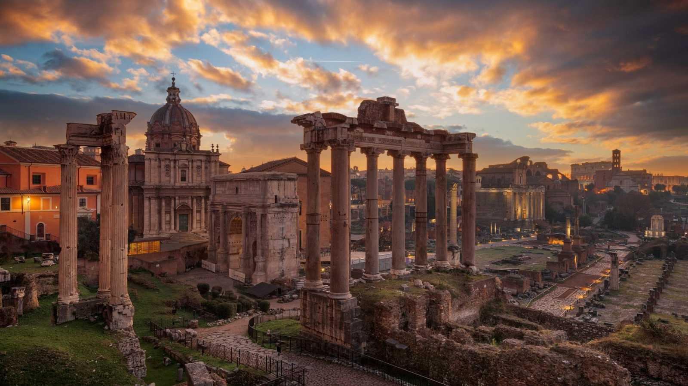
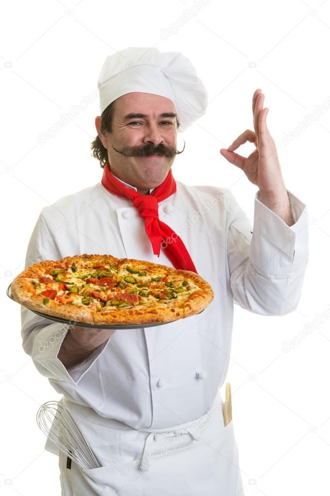

Deliciosamente auténtica
Imprégnate na auténtica experiencia culinaria italiana no noso restaurante, onde cada prato é unha obra mestra de sabores frescos e xenuínos.
Sobre nós
Somos un pequeno restaurante familiar que ten o obxectivo de traer a súa vila os sabores da cocina italiana.
A nosa historia
Vimos dunha poboación preto de Roma na que xa facíamos os pratos típicos da gastronomía italiana desde 1949
O noso chef
Giovani é o noso chef. Pai da familia do restaurante Magnífico leva cociñando os pratos máis deliciosos da cociña italiana toda a vida ao igual cos seus pais
Contacto
- Enderezo: Rua de italia, 23 (baixo)
- Teléfono: +34 678954337
- Horario: Abrimos de martes a domingo de 12h a 17h e de 19h a 00h